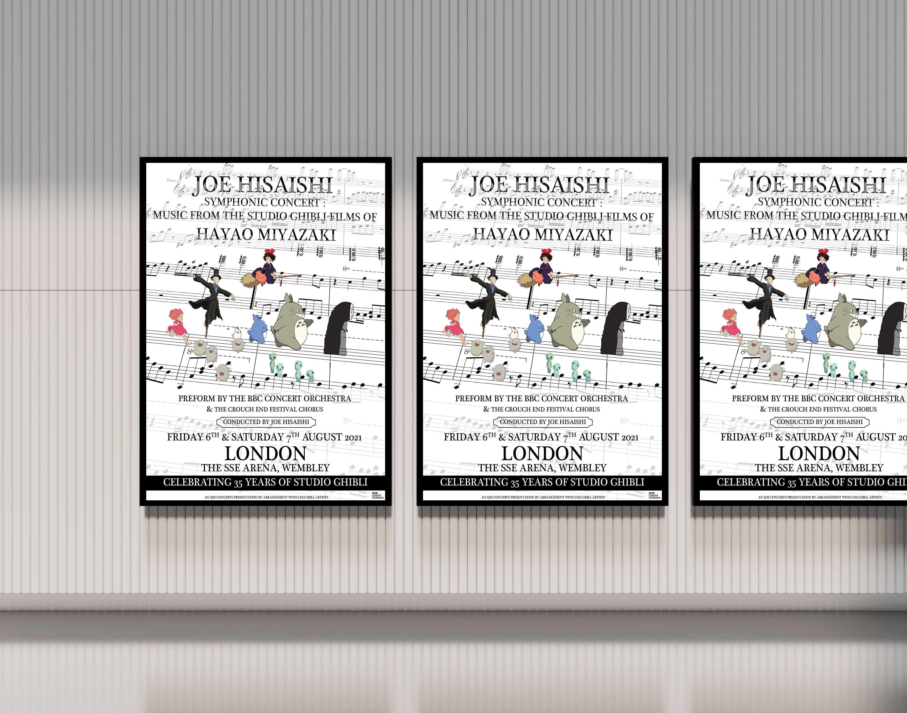
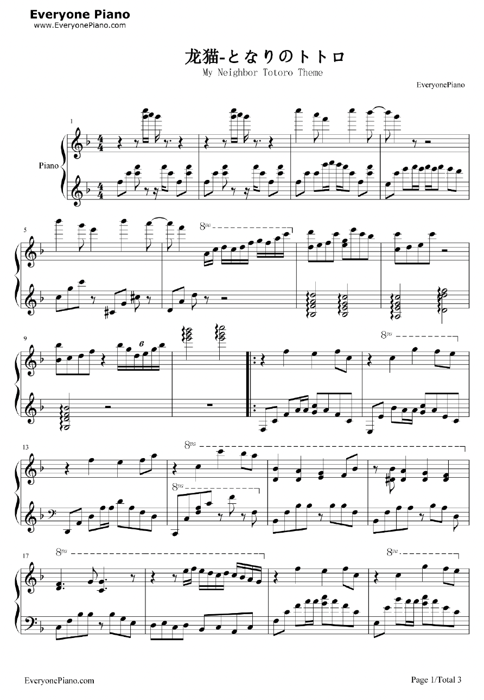

Project Challenge
Design a poster that attracts Studio Ghibli fans to the concert while clearly communicating the key details: the artist, Hayao Miyazaki’s films, the date and the location. It also needed to express the themes of culture, art and nostalgia found in Ghibli's films and music.

Solution
The background uses sheet music from My Neighbour Totoro in black and white. Gestalt contrast and proximity draw attention to the colourful characters. Perspective makes the music larger in the foreground and smaller behind, adding depth, and shadows give each character a 3D effect. Plantagenet Cherokee brings elegance and playfulness, and the text hierarchy runs from Joe Hisaishi to Hayao Miyazaki, then date and location.


Results & Key Outcomes
- Colourful characters stand out clearly against the black-and-white sheet music background
- Text hierarchy guides viewers to the key details first: artist, Miyazaki, date, then location
- The character parade conveys connection, friendship and nostalgia
- Displayed on a white wall mockup that complements the black-and-white palette